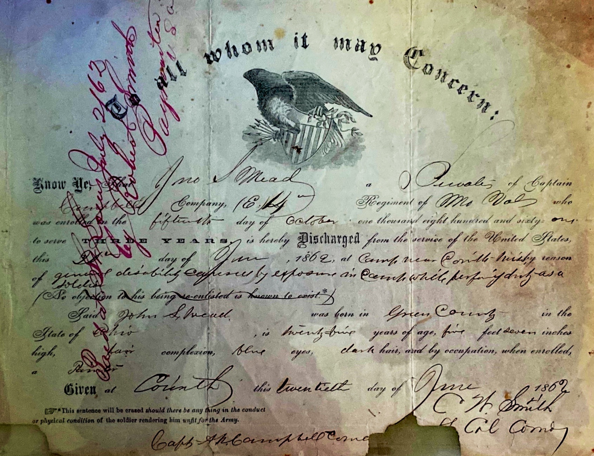
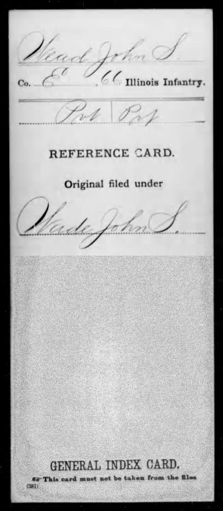
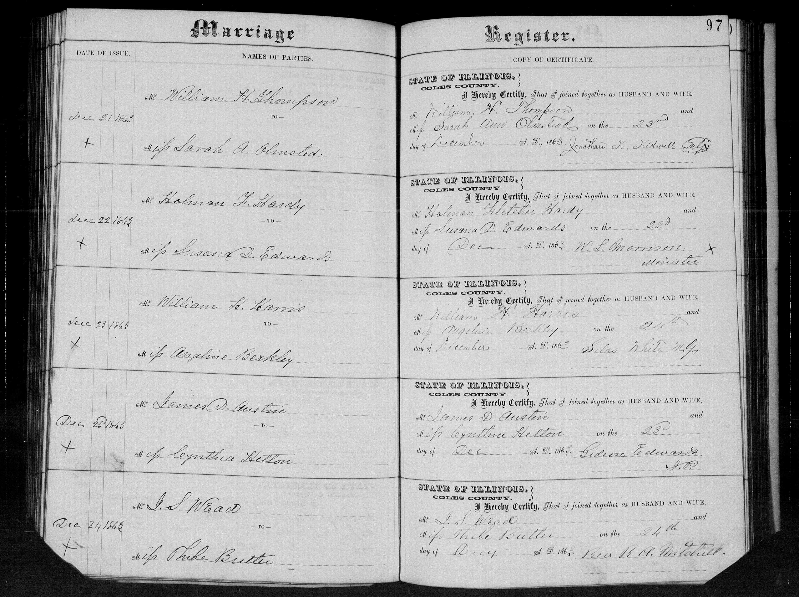
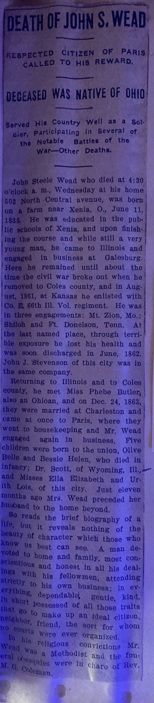
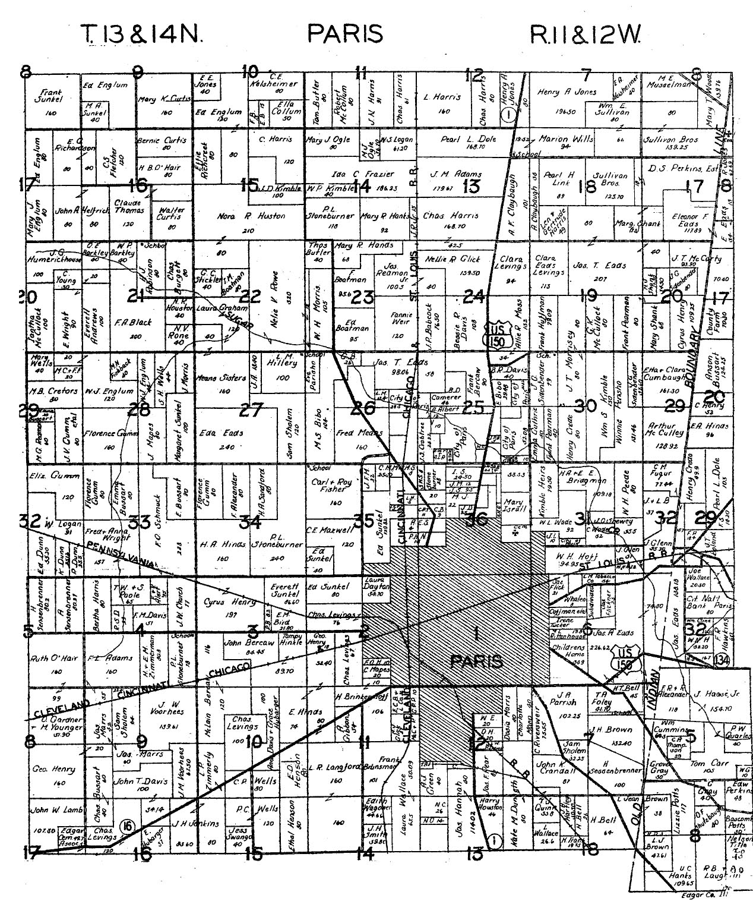

John Steele Wead (1835–1904): From Xenia to Illinois and the 66th Illinois Infantry
John Steele Wead was born on 11 June 1835, near Xenia in Greene County, Ohio, the son of James Wead and part of the same line that had moved westward from Pennsylvania through Kentucky into the Ohio frontier. In his life the family story shifts again. His father’s page ends in the Presbyterian and War of 1812 world of Greene County; John’s page opens in Illinois, in the Union army, and in the smaller, harder story of a man whose wartime exposure followed him for the rest of his life.
The surviving record is strong enough to tell that story with confidence, even if not every phase is documented equally well. For John Steele Wead we have a military discharge paper, a general index card filed under the spelling Wade, a Coles County marriage-register entry, a family letter written to him by his father in 1866, and a detailed 1904 obituary. Together those records carry him from rural Ohio to Illinois, through Company G of the 66th Illinois Infantry, and into later life at Paris, Illinois.
Born near Xenia, then carried west into Illinois
John’s late obituary supplies the fullest narrative of his beginnings. It says he was “born on a farm near Xenia, O., June 11, 1835,” educated in the public schools of Xenia, and while still “a very young man” went west to Illinois, where he was engaged in business at Galesburg before the Civil War. That early Illinois business phase currently rests on the obituary rather than a separate primary record, but the obituary’s birthplace claim is reinforced by the discharge paper, which independently identifies him as born in Greene County, Ohio.
That combination matters. The obituary gives the precise birth date and the Xenia setting; the discharge paper supplies the county-level birthplace in a wartime federal record. Taken together, they fit the larger family movement already visible on James Wead’s page: the Greene County world of the father giving rise to an Illinois branch in the son.
A rare bridge from father to son: the 1866 letter
One of the most important surviving family documents is the 31 May 1866 letter written by James Wead to his son John Steele Wead. The page on James already treats that letter as a major documentary bridge, and it deserves the same emphasis here. Genealogy often gives us legal records without voice; this letter does the opposite. Even before it is fully transcribed, it proves in a tangible, human way that the aging Greene County father and the Illinois son were still linked across distance in the aftermath of the war.
In that sense the letter is more than a family keepsake. It is the hinge between two eras of the Wead line: James’s Greene County household and John Steele’s later Illinois life. Few records make that transition so vividly. The letter is included in the downloads below as one of the key pieces of evidence anchoring John to the documented James Wead family.
Company G, 66th Illinois: service, exposure, and discharge
John Steele Wead’s surviving discharge paper places him in Company G, 66th Illinois Infantry and records that he was enrolled on 15 October 1861 for three years. It further states that he was discharged on 12 June 1862, at a camp near Corinth, Mississippi, for “general disability caused by exposure while performing duty as a soldier.” That language is stark, bureaucratic, and powerful: it turns a family tradition of wartime suffering into a documented federal fact.
The same certificate identifies him as born in Greene County, Ohio and describes him as about five feet seven inches tall, with blue eyes and dark hair. It gives his age as 26 at discharge. If the obituary’s birth date of 11 June 1835 is correct, he would technically have turned 27 just before the 12 June 1862 discharge, so the age on the military form was likely approximate or entered without reference to his exact birthday.
Here the obituary adds important, but clearly secondary, detail. It says John enlisted in August 1861 at Kansas, Illinois, served in the same company as John J. Stevenson, and was in engagements at Mt. Zion, Fort Donelson, and Shiloh. Because the discharge paper is the stronger source for official army timing, this page treats the 15 October 1861 enrollment as the formal military date. The August 1861 obituary memory may preserve the earlier local phase of enlistment, company formation, or community departure, but it should not override the primary military paper.
The obituary’s explanation for John’s failing health also fits the discharge record closely. It remembered that the terrible exposure at Fort Donelson ruined his health and led to his discharge in June 1862. The discharge paper does not name Fort Donelson, but it independently confirms the central claim: exposure on active duty produced a general disability serious enough to end his service.

That index card is important for another reason: it shows the military paperwork drifting between Wead and Wade. The card explicitly notes that the original was filed under “Wade, John S.” In this family that kind of phonetic drift is familiar rather than surprising. The company letter on the card appears to conflict with the discharge paper, which places John in Company G. Until a fuller compiled service file resolves that discrepancy, the discharge paper remains the stronger source for his actual company assignment, while the index card is most valuable as proof of the Wead/Wade surname drift in the record.
Marriage to Phoebe Butler in Coles County
John’s marriage is anchored by a strong primary record. The Coles County, Illinois, marriage register records that J. S. Wead married Phoebe Butler on 24 December 1863. That entry is especially valuable because it confirms the marriage directly in the county register, independently of the later obituary.
The officiant’s name in the register appears to read Rev. B. A. Mitchell, though the handwriting is not perfectly clear and should be treated cautiously until compared against a cleaner county copy. Even with that small uncertainty, the register itself leaves no serious doubt about the couple, place, or date.

The obituary later added that Phoebe Butler was also “an Ohioan,” that John met her after returning to Illinois and Coles County, and that the couple were married at Charleston before going at once to Paris, Illinois. Those later-life narrative details are best presented as obituary claims, but the register firmly establishes the marriage itself.
Paris, family, and Methodist identity
By the time of his death in 1904, John Steele Wead was living at 502 North Central Avenue in Paris, Illinois. His obituary says he died there at 4:30 p.m. on a Wednesday, after a life remembered in town as steady, honorable, and quietly useful. It also says Phoebe had died about eleven months earlier, so the end of John’s life came after a recent personal bereavement as well as decades of lingering wartime damage.
The obituary names five children:
- Olive Belle
- Bessie Helen, who died in infancy
- Dr. Scott, of Wyoming, Illinois
- Ella Elizabeth
- Ursula Lois
In religious life the obituary identifies John as a Methodist and says the funeral services were conducted by Rev. M. L. Coleman. That marks an important generational shift. James’s page is rooted in the Greene County Presbyterian world; John’s obituary closes in a Methodist setting in eastern Illinois. The family line remained recognizably religious, but the denominational setting had changed with migration, marriage, war, and town life.


What is directly documented, what is remembered, and what is inferred
The primary records on this page directly document John’s identity as John S. Wead / Wade, his service in Company G, 66th Illinois Infantry, his 15 October 1861 enrollment, his 12 June 1862 discharge near Corinth for disability caused by exposure, his birth in Greene County, Ohio, his marriage to Phoebe Butler on 24 December 1863, and the existence of a surviving 1866 letter from James Wead to his son John Steele Wead. The cross-reference card additionally documents that the file was indexed under Wade, John S., though its company letter appears to read E rather than G.
The obituary contributes the exact birth date near Xenia, the Xenia-schooling claim, the Galesburg business phase, the August 1861 enlistment-at-Kansas memory, the battle list of Mt. Zion, Fort Donelson, and Shiloh, the statement that John J. Stevenson served in the same company, the names of the children, the Paris street address, the fact that Phoebe died about eleven months earlier, and the Methodist funeral notice.
The main inference made here is not speculative but connective: that these records all belong to the same man, James Wead’s son John Steele Wead. The discharge paper, the Wade/Wead index card, the Coles County marriage register, the obituary’s Ohio-to-Illinois biography, and the 1866 father-son letter all reinforce that conclusion. By contrast, the older 1802 Natchez “John Steele” papers and the separate John Stewart Wead church material are intentionally left outside this biography.
Timeline summary
| Year | Event |
|---|---|
| 11 Jun 1835 | Born near Xenia, Ohio; discharge paper independently places his birthplace in Greene County, Ohio. |
| before 1861 | Obituary says he went to Illinois as a young man and was engaged in business at Galesburg. |
| 15 Oct 1861 | Formally enrolled in Company G, 66th Illinois Infantry for three years; obituary later remembered an August 1861 enlistment at Kansas, Illinois. |
| 1861–1862 | Obituary says he was in the Mt. Zion, Fort Donelson, and Shiloh campaigns and that John J. Stevenson served in the same company. |
| 12 Jun 1862 | Discharged near Corinth, Mississippi, for general disability caused by exposure while performing duty as a soldier. |
| 24 Dec 1863 | Marries Phoebe Butler in Coles County, Illinois. |
| 31 May 1866 | James Wead writes the surviving family letter to his son John Steele Wead. |
| 1904 | Dies at home at 502 North Central Avenue in Paris, Illinois; obituary says he was Methodist and Rev. M. L. Coleman conducted the funeral. |
The earlier bridge: James Wead
John Steele’s story grows directly out of the earlier page on his father, where the 1866 letter first appears as the emotional and documentary bridge between Greene County and Illinois.
Return to James Wead (1790–1873) to read the father’s side of that transition.
This biography is grounded in the surviving military, marriage, obituary, and family-letter evidence now located in the repository and external archive. Where a detail depends only on the obituary, that is stated plainly.